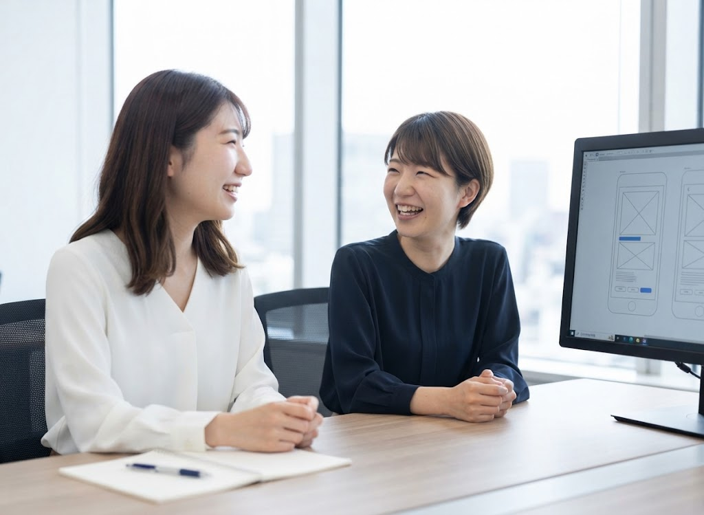
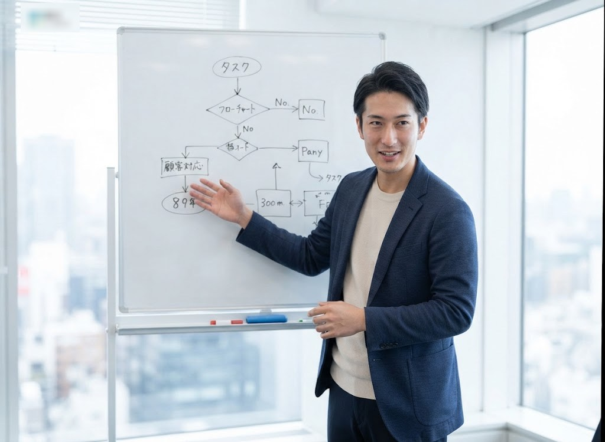
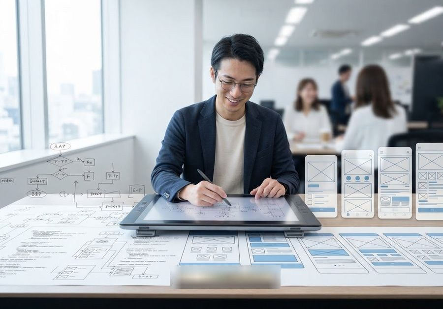
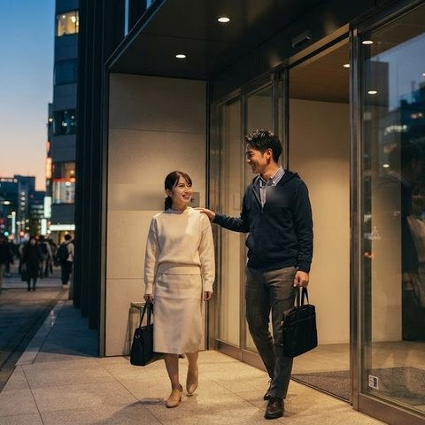

セキュリティ診断
ペネトレーションテストで、Webアプリやスマートフォンアプリに潜む未知の脆弱性を洗い出します。
詳しくみる
ツールの機械的な診断にとどまらず、経験豊富なエンジニアが手動での高度な診断を行い、お客様が本当に求めていた確実な対策方法を提供します。



一人で
ソラミナには
一緒に
情報セキュリティの
共に
2012年の創業以来、情報セキュリティ一筋で培ってきた実績です。
※掲載している数値はすべて架空のサンプルです。
見えない脅威から、明日の安心をつくる。
デジタルが暮らしの隅々まで広がる今、セキュリティは一部の専門家だけのものではありません。私たちは確かな技術と誠実な対話で、お客様が安心して挑戦できる環境を支え、社会全体の信頼を守っていきます。
未来へと続く信頼のカタチ
セキュリティ診断・情報セキュリティコンサルティング・セキュリティソリューション・インシデントレスポンスの4つの事業を柱に、オンライン上に潜むリスクからお客様を守り続けてきました。培ってきた確かな実績を礎に、私たちはこれからも専門性の高い4つの柱で、お客様の安全で豊かなデジタル未来を支え続けます。
ペネトレーションテストで、Webアプリやスマートフォンアプリに潜む未知の脆弱性を洗い出します。
ツールの機械的な診断にとどまらず、経験豊富なエンジニアが手動での高度な診断を行い、お客様が本当に求めていた確実な対策方法を提供します。
最新のセキュリティ製品を選定・導入し、隙のない防御体制を長期的に支援します。
お客様の既存インフラシステム環境に合わせ、最先端のセキュリティ製品(次世代FW、WAF、EDR/MDR)を最適に選定・導入・構築します。製品を売りきりにするのではなく、自社開発のパッチ管理ツール等と組み合わせ、持続可能なロードマップを並走支援します。
自社開発のWAF「SoraGuard」でWebへの攻撃を防御・検知するほか、サーバ・ネットワークの設計構築運用まで一気通貫でご支援します。
リスク評価からポリシー策定まで、組織のセキュリティ体制づくりを支援します。
お客様のビジネスモデルや業界別(ISMS、Pマーク、PCIDSS等)を深く理解し、中長期的なセキュリティ体制の構築をコンサルティングします。組織的な教育支援まで、「仕組み」と「人」の両面を強化します。
インシデント発生時、初動対応から根本復旧まで迅速に対応します。
サイバーインシデントの発生時、即座に現場検証とフォレンジック(デジタル鑑識)を行い、攻撃の侵入経路や影響範囲を徹底究明します。高度な解析技術をもって社会基盤となるインフラやエンタープライズの安全を守ります。
件数を追わず、専門性の高い案件を厳選して確実に対応しています。
なぜソラミナを選んだのか。
現場で活躍するメンバーの声です。
その日の予定をチームで共有
脆弱性診断・分析
Burp Suite、Nessusを使用
クライアント打合せ
作成・レビュー

翌日準備
「入社した社員と長く一緒に働いていきたい」という思いからできた制度です。
遠方の実家への帰省をサポート
頑張った結果をきちんと評価
近くの飲食店でのランチを応援
自分の誕生日はしっかり休める
情報処理安全確保支援士／CISSPなど、業務に関わる資格の受験費用を会社が負担。合格時は資格手当も支給
入社時点での必須資格はありません。入社後の資格取得支援制度を活用しながら、業務を通じて専門性を身につけていただけます。
前職の業界知識やご経験は、お客様理解やコンサルティングの提案に活かせます。使用ツールについても、面談時に詳しくお伺いします。
部署を越えて相談し合える距離感があり、案件で困ったときはチームで必ずフォローし合う雰囲気です。
職種やプロジェクトによって異なります。オンライン面接や入社時期のご相談も含め、詳細は面談時にご説明します。
通年採用のほか、オンライン面接や入社時期のご相談にも対応しています。
ご応募いただいた個人情報は、採用選考の目的にのみ使用いたします。
ご質問のみでも構いません。お気軽に recruit@example.com までお問い合わせください。
書類選考 → オンライン面接(2回程度) → 内定（目安2〜3週間）
下記フォームよりご応募ください。2〜3営業日以内にご連絡いたします。